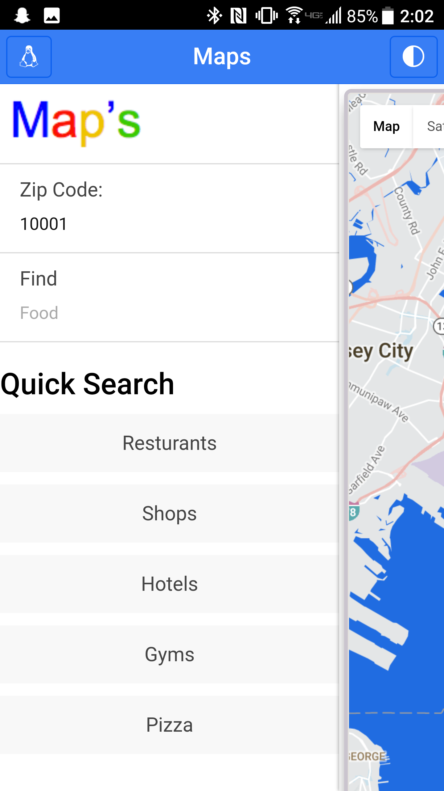
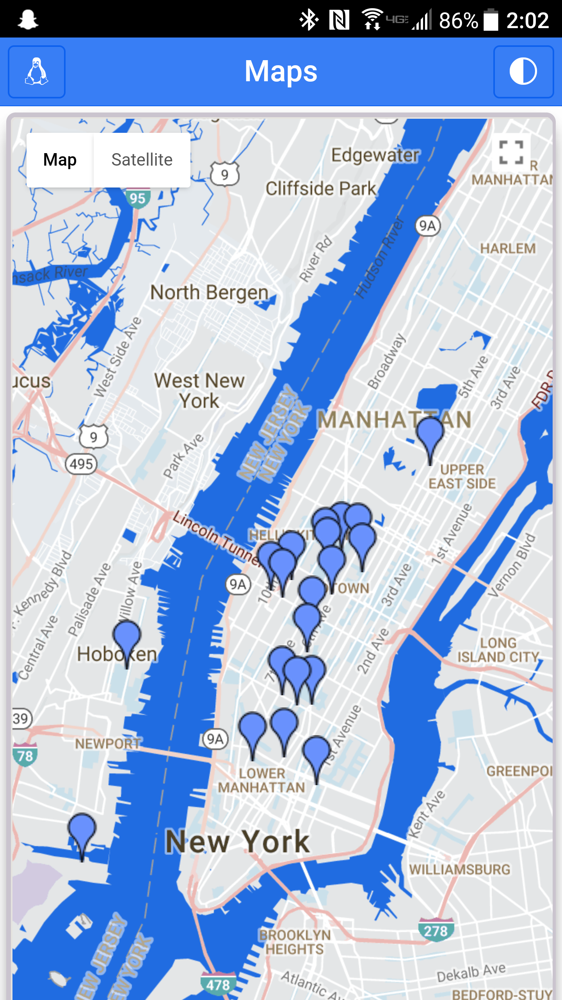
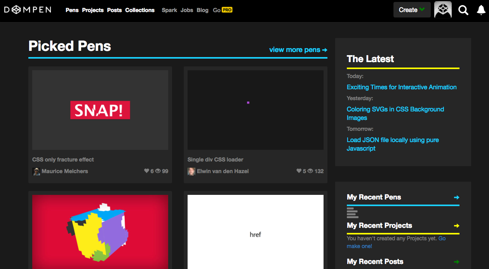
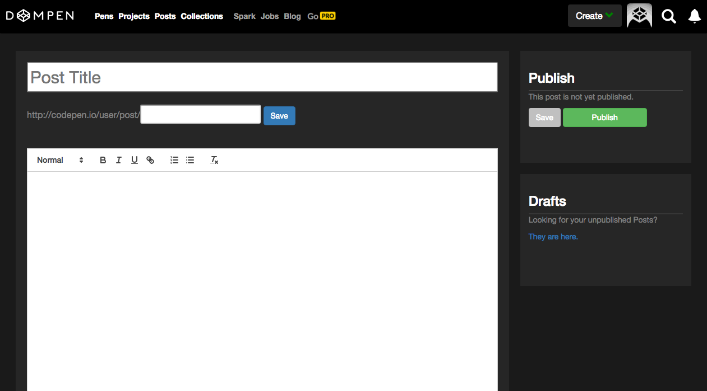
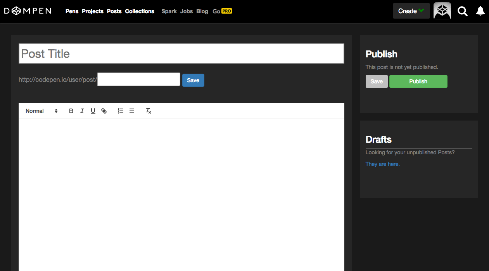

Skills
Projects
Maps App


Codepen Remix
- The app locates your current location or can find a new location using zipcode, from there you can search for anything in your area...(food, hotels, car dealers, etc..)
- The app is available in bowers and on the Android platform.
- Project requirers no server by using google maps and geolocation data.
- Technologies included Angular 1.6, Ionic, Cordova, HTML5, CSS, SASS, GULP, MaterializeCSS
View Project

- This project was a clone of the website codepen.io
- The site allows you to create in browser code pens and blog posts. Aswell as view previous pens that have be posted.
- Project won DevMountain award for most Shippable and Best Overall.
- Technologies included Angular 1.6, ES6, jQuery, jQueryUI, Node.js, Massive.js, mySQL, Postgres, Auth0 login authentication, HTML5, CSS, Bootstrap. Two plugins were used for a code editor (CodeMirror) and text editor (Quill)
- Full stack project, hosted on Digital Ocean
View Project
 
